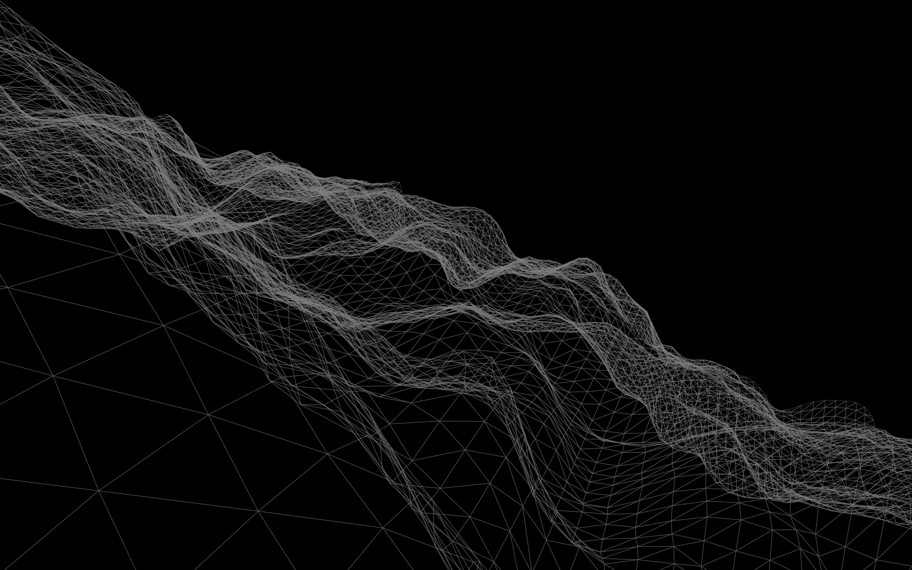
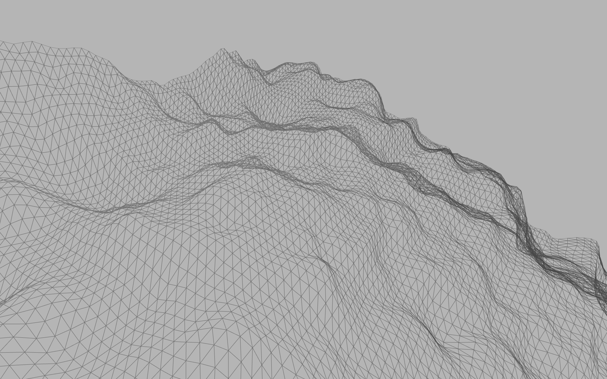
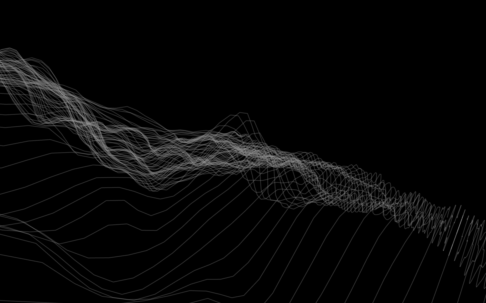

Make us proud: Free assignment
I always challenge myself more and more with each assignment and trying to learn as much as possible because I know I’ll use this stuff in the future. So I was very happy when our assignment was to create something we would be proud of to present. We were supposed to combine what we’ve learned so far in this course and use: shapes, colors, user input, conditionals, functions, loops and arrays in our application or game.
My first idea was to develop a 3D game where you would have to avoid obstacles flying in a tunnel with your spaceship. With your cursor you could control the direction of the spaceship - hover left to go to the left, down to go to the bottom and so on.
I started with making an environment. I wanted the background of the game to look epic on its own and I found it great to make something like moving wave consisting of triangle shapes. The movement of this wave would simulate the speed of the flying spaceship.
At this point I decided not to make a game I originally intended but instead an interactive 3D wave. In this project I really challenged myself and put a lot of effort to it. This is the final result:
The wave is randomly generated and looped in 3000 by 3000px square in 3D interface. I wanted to increase the potential of this app by making the user more immersed to the visuals. The user can freely rotate the wave in any direction with their mouse, zoom in or out and I even made it possible to change the nature of the wave itself.
You can turn on color mode by pressing "X" on your keyboard. You can invert the colors by hitting "I". By pressing "P" or "D" you change the structure of the wave to points. I also implemented structure made out of lines which you can see by hitting "L" key. There is also this weird effect (press "E") which I initially intended to demonstrate earthquake but the end result generates triangles above and beneath the wave. When you press TAB key, the motion will stop. To resume, press any other key. All these modes and structure changes works also with lower case characters so you don’t have to hold shift while pressing "X".
